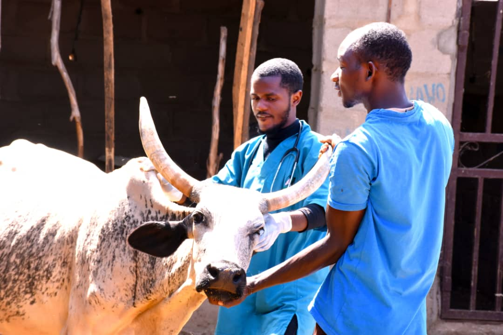

Blog Post One
 Renewed Hope As A Result of PPR Vaccination 2Majority of the inhabitants of rural communities in Northern Nigeria, largely depend on agriculture as their main source of income. This is also true for women who depend on the rearing of small ruminants and poultry as their primary source of income. Small ruminants and poultry farmers are faced with two major diseases – Peste des Petits Ruminants (PPR) and New Castle Disease (NCD). An outbreak of PPR and NCD on a farm can lead to a severe loss of income to the affected farmer. For instance, a healthy goat that is sold for about ₦10,000 can be sold for about ₦1,500 if infected with PPR disease. Selling infected animals also pose a serious public health problem that can affect the quality of life of the entire human population.
Animal health issues like these have far-reaching implications on the profitability and income of community livestock farmers. Working with government, private sector partners, including the Nigerian Veterinary Council (VCN), the National Veterinary Research Institute (NVRI), the Nigerian Veterinary Medical Association (NVMA), Ambuvet, and Tropical Poultry Limited, Propcom has set up a rural distribution system to make animal health products and services accessible to rural communities.
Huraira Abubakar is a rural livestock farmer (small ruminants) from Igabi LGA in Kaduna state. She is a mother of four children with two co-wives, in a polygamous household setting of 22 family members with no educational background. For the last 10 years, Huraira depends on the proceeds from her livestock farm of small ruminants for her and her family’s upkeep. Unfortunately, in 2017, there was an outbreak of PPR disease in northern Nigeria which caused a devastating loss to small ruminant farmers including Huraira. Huraira who had 27 goats before the disease outbreak was left with only 7 surviving goats.
"Well, when the PPR outbreak sets in, it affects livestock of every household in the community. Like last year, there was a household that lost almost all of its livestock, only one survived the PPR epidemic….They had, more than twenty goats and only one was left."
Huraira was unhappy about her loss. She thought about quitting the business but had nothing else to do. For 3 years, she sat and watched how her goats died one after the other as a result of PPR disease. With no help or information on how to prevent PPR, most livestock farmers in Huraira’s community began administering medications to the infected livestock with no positive outcome.
"The first year my goats were infected with the PPR disease, I lost 20 goats. I had a total of 27 goats that year. Along the line, I began to lose my livestock due to PPR illness. If the mothers of the goats give birth to like 20 or 30 young’s (kids), only 4, 5, or 6 will survive. This was how they died gradually… It reached a point where I felt like quitting (rearing of livestock), because of my bitter experience. But when I looked back at the benefits of rearing livestock as my primary source of income, I just couldn’t stop."
In 2020, Huraira Abubakar and her community members got in contact with Ambuvets (PM’s partner on livestock intervention in Kaduna state) through the help of a PM staff.
Huraira and her husband with their vaccinated goats.
Ambuvet is an organisation that provides animal health care services to livestock farmers, with an emphasis on PPR and NCD vaccination within Kaduna state. Upon entry into the state in 2018, a few LGAs were selected to serve as pilot communities for the NDV-i2 and PPR vaccination campaigns in selected locations. The positive outcome of the pilot phase of the vaccination campaigns led to the buy-in of major stakeholders like the Kaduna State Ministry of Agriculture and the Veterinary Council of Nigeria. An expansion to all 23 LGAs was imminent due to the support of the state government and more vaccinators/ Community Animal Health Workers (CAHWs) were brought on board to cover the expansion.
Other strategies were implemented to provide or make available standard agro-vet products within the state, sensitise farmers about the PPR and NDV-i2 vaccine as well as to make known the names/contacts of the trained CAHWs for easy access by livestock farmers within the state.
Huraira Abubakar who had almost lost all hope in her livestock business now has renewed optimism due to the efforts of Ambuvets. Ambuvets inoculated ruminants and poultry with PPR and NCD vaccine which prevented these diseases from occurring and spreading, enabling farmers to have healthy animals, thereby making their businesses more profitable. Due to the vaccination of Huraira’s seven surviving goats, she has been able to sell healthy goats at a good profit, which enabled her to buy more livestock for rearing.
During the PPR outbreak, Huraira made an average monthly profit of ₦5,000 as she had only 7 surviving goats and couldn’t sell her breeding stock. But after vaccinating her goats against PPR, Huraira made an average monthly profit of ₦40,000. Huraira now has 32 goats and four sheep, and she is now able to save more money to cater for her needs and that of her family. With the growing number of livestock, Huraira’s husband now supports her with caring for the goats and taking the goats to be sold, to the market.
Ambuvet also provided Igabi LGA with trained and certified CAHWs who had access to quality/standard agro-vet products for effective livestock service delivery.
Huraira with her growing goat population after vaccination against PPR.
"Ever since my goats were vaccinated with the PPR vaccine by Ambuvet , I have not spent any money on livestock treatment, like I used to in the past… I just aspire to be able to run my life smoothly without much difficulties regarding finance, and anyone who sees me should be able to tell that I am not suffering."